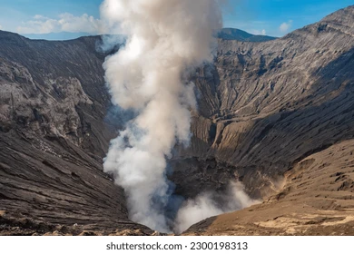

|  |
Gunung Bromo
| Gunung Bromo adalah salah satu gunung api yang masih aktif di Indonesia. Gunung yang memiliki ketinggian 2.392 meter di atas permukaan laut ini merupakan destinasi andalan Jawa Timur. Gunung Bromo berdiri gagah dikelilingi kaldera atau lautan pasir seluas 10 kilometer persegi.
Wisatawan yang berkunjung ke Gunung Bromo akan disambut oleh pemandangan yang indah. Salah satu hal yang terkenal dari Gunung Bromo adalah golden sunrise-nya, pasalnya, Gunung Bromo dinobatkan sebagai tempat yang menawarkan pemandangan matahari terbit terbaik di Pulau Jawa.
Sesaat setelah momen matahari terbit berakhir, wisatawan akan kembali disuguhkan pemandangan yang tak kalah indanya, yaitu pemandangan negeri di atas awan. |
Probolinggo, Jawa Timur |
|
Pantai Kuta |
Pantai Kuta adalah pantai yang terkenal di Bali dengan ombak yang cocok untuk berselancar.
Pantai Kuta, Lombok adalah tempat wisata di Pulau Lombok, Provinsi Nusa Tenggara Barat, Indonesia. Pantai dengan pasir berwarna putih seperti buliran merica ini terletak di Kawasan Ekonomi Khusus Mandalika di Desa Kuta. Pantai Kuta mulai dikenal dan
dikembangkan sebagai destinasi wisata pada mulanya oleh PT. Rajawali Indonesia (BUMN, sekarang jadi ITDC) pada tahun 1970an. Pantai Kuta (Kute, ejaan lokal) memang terkenal dengan pasir putihnya yang berbeda dengan kebanyakan pantai di Indonesia. Pasir berwarna putih bak merica dengan garis pantai yang panjang menjadikan Kuta sebagai idola bagi para wisatawan domestik dan mancanegara.
|
Bali |
 |
Candi Borobudur |
Candi Borobudur adalah candi Buddha terbesar di dunia yang terletak di Magelang, Jawa Tengah.
Candi Borobudur dipengaruhi oleh seni bangunan Indonesia yaitu punden berundak.
Artinya, bangunan yang tersusun bertingkat dan berfungsi sebagai tempat pemujaan terhadap roh-roh nenek moyang penganut animisme dan dinamisme.
Di era Megalitikum, pundek berundak selalu bertingkat tiga dengan makna masing-masing.
Tingkat pertama melambangkan kehidupan saat masih di kandungan ibu. Tingkat kedua melambangkan kehidupan di dunia dan tingkat ketiga melambangkan kehidupan setelah meninggal. |
agelang, Jawa Tengah |